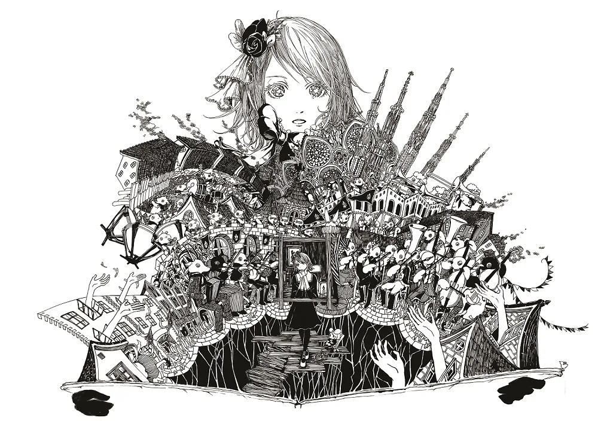
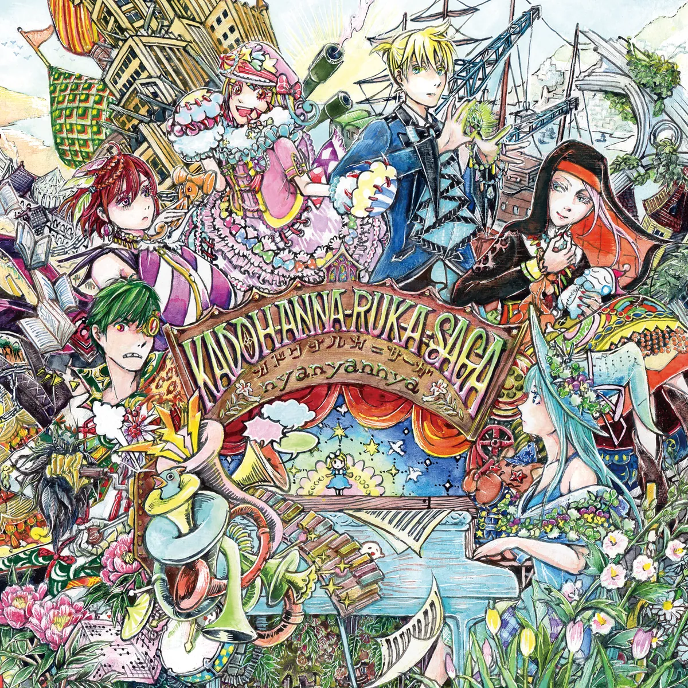

ストーリー
童話「鉛姫」から始まった色を失った世界の物語。「本当に大切なもの」を探す旅がいくつもの章にわたって続いています。
色偸るセカイの鉛姫（終章）
鉛姫リーディアが失われたセカイの色を求める物語。

カドワナルカ＝サーガ（本編）
「大切なもの」をテーマにしたキャラクターごとの物語です。

DIZZ Yøu XXX IT?（前日譚）更新中
魂を燃料とする奇械が文明を支える帝都アークヨルム。十八部隊の学生兵と教員たちが怪物〈トーメント〉と陰謀に挑む群像戦記。
更新中の前日譚。続きはFANBOXで読めます。